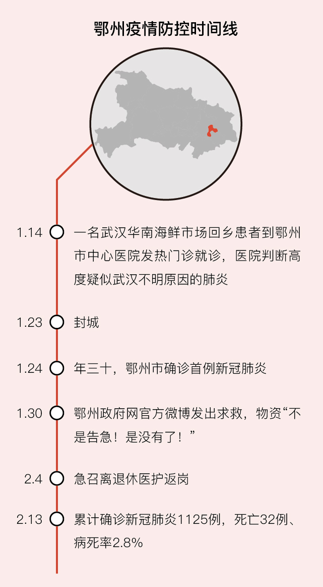

谁夺走了你的微信运动榜冠军
原文链接 备份链接 受访者供图 实习生 徐竞然 “如果让我也去一线，你说我去吗？” 大年三十，看着讲述抗击新冠肺炎疫情的春晚节目，杨璐（化名）问女儿。 “不去，你又不是医生、记者，去有什么用？” 女儿说。这里是天津，距离武汉一千多公里。 …
封面报道之治理篇：
孝感：如何夯实乡村防火墙？ | 咸宁：接送病人在路上 | 襄阳：最后的出口 | 潜江：汪洋中的一条船
“你把口罩戴上，什么时期了？莫大意，莫大意！”2月10日下午，抓着手机正在通话中的鄂州市鄂城区凤凰街道某社区的社区干部张菊（化名），突然对着一位路过的社区居民喊起来。她看到，这位居民刚刚把口罩拉到下巴底下了。
张菊此时的身份是“网格员”，她正在社区门口执勤。网格化管理是各地社区排查和监控疫情的主要做法。鄂州是湖北紧邻武汉市东南的地级市，人口仅107万，但截至2月13日24时，鄂州市已累计确诊新冠肺炎1125例，死亡32例、病死率2.8%。鄂州万人感染率目前达到10.5人，高居湖北省第二，仅次于武汉。位于鄂州市主城区的凤凰街道，是该市的主要街道，也是该市最大的疫区——已确诊病例452例，占全市确诊病例的约40%。
张菊在社区工作多年，她管的社区有1万多人，共十几个社区干部，“街道办下来三个人，鄂州市还派了六七十个公务员，还有几个志愿者”。截至2月10日，该社区已发现近20例新冠肺炎的确诊和疑似病例，此外还有密切接触者、居家留观者50多人。从春节前的1月21日鄂州市“开始战备”到现在，她一天没休息过。
凤凰街道一共13个社区，这个社区被分成8个网格，每一个网格都有网格员负责。网格内高度疑似、发热、密切接触的家庭，按规定不得出门。网格员必须穿防护服。他们的工作包括给居民送菜或其他生活物资、做消杀、做劝导工作等。在劝导隔离人员去隔离点时，很多人不愿意去，网格员要让居民把门打开，面对面说服。此时网格员和居民相距不能超过2米以上，隔远了又戴着口罩，居民听不见。随后网格员得跟车将隔离人员送到隔离点。
“我们缺防护服、护目镜、酒精、N95口罩。”张菊说，整个社区8个网格每天就要消耗8件防护服。而社区也没有N95口罩，现在戴的是一次性口罩，而一次性口罩也只剩下几百个。张菊穿上防护服就不敢去上厕所，不敢喝水。一件防护服穿一天，“穿半天就浪费了。”

2月13日，湖北鄂州一家消毒液生产企业，工作人员装运等待出厂的消毒液。
在没有防护服的时候，社区网格员自创“简易防护服”，就是一双鞋套，一件厨房做饭用的褂子，一双一次性的手套，一个口罩。
“有浴帽就戴个浴帽，没有就戴顶帽子。护目镜买的几块钱一个的，有总比没有强。”张菊说，由于鄂州很多店都没开门，现在连褂子都卖断货了。
据她所知，鄂州市已有好几个社区的工作人员感染新冠。“我天天面对居民，你说风险大不大？”她坦言，“天天接触这么多人，你肯定害怕啊。”
疫情当前，社区防疫工作十分不易，网格员压力巨大，“社区这一群人真的蛮苦，都是女同志，都有儿女、父母。”张菊举例说，社区有个70多岁的老爹爹是确诊疑似新冠，“疑似得已经被确诊为疑似了，再发展一下就确诊了”，但他到医院以后寻死觅活非要出院，差点在医院跳楼。没办法，家属又把他接回社区家里了。
这导致那一栋楼的居民意见非常大，强烈要求给整个楼消毒。于是，社区的人穿着防护服，背着喷壶，一股子药水从楼上杀到楼下。“在社区工作的都是女同志，桶子太重，背半桶药水就有20斤，真背不动。”张菊说，这两天她还把老爹爹家门敲开，面对面跟70多岁的婆婆做工作，让她劝爹爹去医院、去隔离点。她给婆婆量了体温，还好不烧也不可咳，“我离她有一两米远”。
社区工作也常需要化解居民的不理解。
张菊说，2月9日晚上11点有个居民给她打电话，说70多岁的爸妈住在张菊的辖区内。老两口有点发热、咳嗽，想让社区用应急车辆送去医院。张菊拒绝了，这个居民相当不满。后来社区连夜联系了医生、护士给老两口上门。
“他们是发热、咳嗽的病人，我要保护我们司机啊。” 张菊说，鄂州市禁行以后，社区配了出租车应急。为防止交叉感染，应急车辆不运送发热病人。
社区防疫的一项重要工作是入户摸排外地返乡人员，这项工作难度很大。
一个典型案例是，张菊辖区有两个老人，其儿子、儿媳、孙子、孙女四口人从武汉回来，社区摸排了三轮都没有查出来。后来，这家人陆续有人发病送去医院隔离或集中留观点，才告诉社区他们四口人是从武汉回来的。
“我们敲门问，你们家有没有外地返乡人员？他要承认我就登记，他不承认我们怎么去了解呢？”张菊说。
张菊说，从大年三十到初三，社区干部做了第一轮摸排，当时仅摸排出不到100个返乡人员。由于“数字不理想，不对”，从初四到初六，鄂州市政府又派公务员到社区协助进行第二轮摸排。第三轮是针对返乡人员比较多的重点楼房。随后又通过发口罩、发84消毒液、发通行卡开展了三轮摸排。经过六轮摸排后，该社区摸排出来返乡人员400多人。而最近有了新政策，外地人如果没有任何问题的，办齐手续就可以开车离开鄂州。该社区在办理的时候，又发现之前没有摸排出来的几十个外地返乡人员。

相关报道：
此文限时免费阅读。感谢热心读者订阅财新通，支持新闻人一线探求真相！成为财新通会员，畅读财新网！
更多报道详见：【专题】新冠肺炎防疫全纪录（实时更新中）
[《财新周刊》印刷版，各大机场书店零售；按此优惠订阅，随时起刊，免费快递。]
原文链接 备份链接 受访者供图 实习生 徐竞然 “如果让我也去一线，你说我去吗？” 大年三十，看着讲述抗击新冠肺炎疫情的春晚节目，杨璐（化名）问女儿。 “不去，你又不是医生、记者，去有什么用？” 女儿说。这里是天津，距离武汉一千多公里。 …
原文链接 备份链接 图片来源：视觉中国 整理 | 何香奕 实习记者 唐青青 疫情面前，争分夺秒，全国近400万名社区工作者站在了前线。 基层社区承担着排查“第一道防线”，亦有系统布局上的深刻意义。2020年1月27日，国家卫健委指出，社区 …
原文链接 备份链接 【财新网】（记者 萧辉）1月26日，仅戴一个普通口罩的社区工作者张莉带着两名穿着防护服、戴着护目镜的医务人员，在居民楼下等一对发烧的老年夫妻，准备送医。 当天上午，一名64岁的居民到社区服务站登记求助，他自1月17 …
原文链接 备份链接 【财新网】（记者 覃建行）新型冠状病毒肺炎确诊病例激增后，武汉百步亭社区曾于此间举办“万家宴”的活动引发了争议。1月22日，财新记者走访当地，多位居民称此前政府对疫情评估不够，导致在传染性疫情趋重的情况下还举办如此大 …
原文链接 备份链接 在武汉乃至全国，百步亭社区都是标杆式的存在。社区位于湖北武汉的江岸区，由 11 个小区组成，常住人口 13 万。 百步亭分为安居苑、百合苑、现代城、景兰苑、悦秀苑、幸福时代等 11 个小区。 图片来源： …